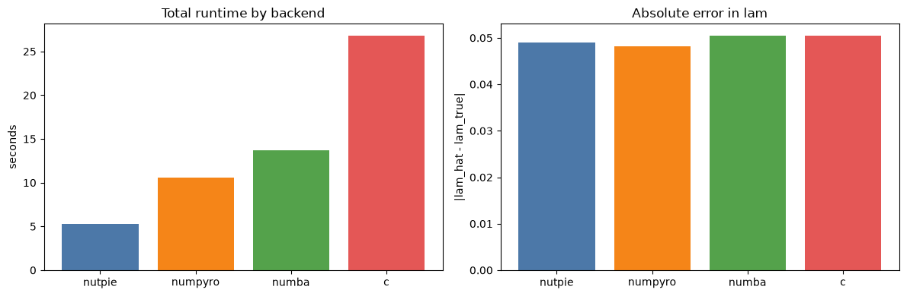

SEM Sampling Backend Profiling¶
Note: To run this notebook end-to-end you must have the optional JAX backends installed, e.g. conda install jax numpyro blackjax.
This notebook profiles a fixed Spatial Error Model (SEM) across PyMC sampling backends, mirroring sampling_backend_profiling.ipynb (the SAR version). It additionally verifies that the captured log_likelihood group is equivalent across backends — a non-trivial guarantee for SEM because the model defines its likelihood via pm.Potential (Gaussian on the spatially-filtered residual) plus a Jacobian term.
Why this is interesting for SEM specifically¶
Until recently, the SEM model relied on a manual NumPy block in fit() to populate idata.log_likelihood because PyMC’s JAX log-likelihood path iterates model.observed_RVs — and an pm.Potential-only model has none. As of the spec1 release, when a JAX backend is requested the SEM model is built with a pm.CustomDist whose logp returns the per-observation Gaussian density plus log|I - λW| / n. PyMC then captures log_likelihood natively on every backend.
This notebook validates that contract: under the same DGP and seed, the per-observation log-likelihood produced by the C/Numba pm.Potential path matches the JAX pm.CustomDist path within Monte-Carlo error.
Workflow¶
Simulate SEM data on a regular polygon grid via
neighbayes.dgp.simulate_semFit the same SEM model under each available backend with
idata_kwargs={'log_likelihood': True}Compare runtime, posterior summaries, and log-likelihood across backends
Backends compared:
c: PyMC NUTS with the default C-backedFAST_RUNcompile modenumba: PyMC NUTS withNUMBAcompile modenumpyro: JAX-backed NUTS via NumPyroblackjax: JAX-backed NUTS via BlackJAX
import importlib.util
import time
import warnings
import arviz as az
import matplotlib.pyplot as plt
import numpy as np
import pandas as pd
from libpysal import graph
from neighbayes import dgp
from neighbayes.models import SEM
warnings.filterwarnings("ignore", category=UserWarning)
warnings.filterwarnings("ignore", category=FutureWarning)
PROFILE_CFG = {
"n_side": 16, # grid side; obs = n_side**2 = 256
"draws": 500,
"tune": 500,
"chains": 4,
"cores": 2,
"seed": 2026,
"logdet_method": "eigenvalue",
}
BACKENDS = {
"c": {
"nuts_sampler": "pymc",
"compile_kwargs": {"mode": "FAST_RUN"},
"requires": [],
},
"numba": {
"nuts_sampler": "pymc",
"compile_kwargs": {"mode": "NUMBA"},
"requires": ["numba"],
},
"numpyro": {
"nuts_sampler": "numpyro",
"compile_kwargs": None,
"requires": ["numpyro", "jax"],
},
"blackjax": {
"nuts_sampler": "blackjax",
"compile_kwargs": None,
"requires": ["blackjax", "jax"],
},
"nutpie": {
"nuts_sampler": "nutpie",
"compile_kwargs": None,
"requires": ["nutpie"],
},
}
TRUE_BETA = np.array([1.0, 0.8, -0.5], dtype=np.float64)
TRUE_LAM = 0.4
TRUE_SIGMA = 0.7
def backend_available(requirements):
return all(importlib.util.find_spec(name) is not None for name in requirements)
def simulate_sem_data(seed, n_side=16):
"""Simulate SEM data on an n_side x n_side polygon grid.
Returns the simulated GeoDataFrame plus arrays needed for fitting.
"""
rng = np.random.default_rng(seed)
gdf = dgp.simulate_sem(
n=n_side,
lam=TRUE_LAM,
beta=TRUE_BETA,
sigma=TRUE_SIGMA,
rng=rng,
create_gdf=True,
)
W_graph = graph.Graph.build_contiguity(gdf, rook=True).transform("r")
y = gdf["y"].to_numpy()
X_cols = [c for c in gdf.columns if c.startswith("X_")]
X = gdf[X_cols].to_numpy()
return gdf, y, X, W_graph
def fit_backend(backend_name, y, X, W):
cfg = BACKENDS[backend_name]
if not backend_available(cfg["requires"]):
return {
"backend": backend_name,
"available": False,
"total_time_s": np.nan,
"lam_hat": np.nan,
"sigma_hat": np.nan,
"beta_rmse": np.nan,
"divergences": np.nan,
"has_log_likelihood": False,
"idata": None,
"error": "missing optional dependency",
}
t0 = time.perf_counter()
try:
model = SEM(y=y, X=X, W=W, logdet_method=PROFILE_CFG["logdet_method"])
kwargs = dict(
draws=PROFILE_CFG["draws"],
tune=PROFILE_CFG["tune"],
chains=PROFILE_CFG["chains"],
random_seed=PROFILE_CFG["seed"],
progressbar=False,
compute_convergence_checks=False,
sampler="nuts",
nuts_sampler=cfg["nuts_sampler"],
idata_kwargs={"log_likelihood": True},
)
if cfg["nuts_sampler"] == "pymc":
kwargs["cores"] = PROFILE_CFG["cores"]
kwargs["compile_kwargs"] = cfg["compile_kwargs"]
idata = model.fit(**kwargs)
elapsed_s = time.perf_counter() - t0
beta_hat = idata.posterior["beta"].mean(("chain", "draw")).to_numpy()
lam_hat = float(idata.posterior["lam"].mean(("chain", "draw")).to_numpy())
sigma_hat = float(idata.posterior["sigma"].mean(("chain", "draw")).to_numpy())
divergences = int(idata.sample_stats["diverging"].sum().to_numpy())
has_ll = (
hasattr(idata, "log_likelihood") and "obs" in idata.log_likelihood.data_vars
)
beta_rmse = float(np.sqrt(((beta_hat - TRUE_BETA) ** 2).mean()))
return {
"backend": backend_name,
"available": True,
"total_time_s": elapsed_s,
"lam_hat": lam_hat,
"sigma_hat": sigma_hat,
"beta_rmse": beta_rmse,
"divergences": divergences,
"has_log_likelihood": has_ll,
"idata": idata,
"error": "",
}
except Exception as exc:
return {
"backend": backend_name,
"available": True,
"total_time_s": np.nan,
"lam_hat": np.nan,
"sigma_hat": np.nan,
"beta_rmse": np.nan,
"divergences": np.nan,
"has_log_likelihood": False,
"idata": None,
"error": f"{type(exc).__name__}: {exc}",
}
gdf, y, X, W = simulate_sem_data(seed=PROFILE_CFG["seed"], n_side=PROFILE_CFG["n_side"])
fig, ax = plt.subplots(1, 1, figsize=(7, 7))
gdf.plot(
column="y", cmap="viridis", legend=True, linewidth=0.15, edgecolor="white", ax=ax
)
ax.set_title(
f"Simulated SEM y on {PROFILE_CFG['n_side']}x{PROFILE_CFG['n_side']} grid"
f" (lam={TRUE_LAM}, sigma={TRUE_SIGMA})"
)
ax.set_axis_off()
plt.show()

rows = []
for backend_name in BACKENDS:
print(f"Profiling backend={backend_name}...")
rows.append(fit_backend(backend_name, y, X, W))
results = pd.DataFrame(rows)
results["lam_abs_error"] = (results["lam_hat"] - TRUE_LAM).abs()
results = results.sort_values(
["available", "total_time_s"], ascending=[False, True], na_position="last"
).reset_index(drop=True)
display_cols = [
"backend",
"available",
"total_time_s",
"lam_hat",
"lam_abs_error",
"sigma_hat",
"beta_rmse",
"divergences",
"has_log_likelihood",
"error",
]
results[display_cols].round(
{
"total_time_s": 3,
"lam_hat": 3,
"lam_abs_error": 3,
"sigma_hat": 3,
"beta_rmse": 3,
}
)
Profiling backend=c...
Profiling backend=numba...
Profiling backend=numpyro...
Profiling backend=blackjax...
Profiling backend=nutpie...
Initializing NUTS using jitter+adapt_diag...
Multiprocess sampling (4 chains in 2 jobs)
NUTS: [lam, beta, sigma2]
Sampling 4 chains for 500 tune and 500 draw iterations (2_000 + 2_000 draws total) took 10 seconds.
Initializing NUTS using jitter+adapt_diag...
Multiprocess sampling (4 chains in 2 jobs)
NUTS: [lam, beta, sigma2]
Sampling 4 chains for 500 tune and 500 draw iterations (2_000 + 2_000 draws total) took 10 seconds.
/home/runner/micromamba/envs/test/lib/python3.14/site-packages/tqdm/auto.py:21: TqdmWarning: IProgress not found. Please update jupyter and ipywidgets. See https://ipywidgets.readthedocs.io/en/stable/user_install.html
from .autonotebook import tqdm as notebook_tqdm
| backend | available | total_time_s | lam_hat | lam_abs_error | sigma_hat | beta_rmse | divergences | has_log_likelihood | error | |
|---|---|---|---|---|---|---|---|---|---|---|
| 0 | nutpie | True | 5.310 | 0.449 | 0.049 | 0.692 | 0.032 | 0.0 | False | |
| 1 | numpyro | True | 10.612 | 0.448 | 0.048 | 0.693 | 0.033 | 0.0 | True | |
| 2 | numba | True | 13.667 | 0.451 | 0.051 | 0.693 | 0.032 | 0.0 | True | |
| 3 | c | True | 26.817 | 0.451 | 0.051 | 0.693 | 0.032 | 0.0 | True | |
| 4 | blackjax | True | NaN | NaN | NaN | NaN | NaN | NaN | False | TypeError: build_kernel.<locals>.kernel() got ... |
ok = results[results["total_time_s"].notna()].copy()
fig, axes = plt.subplots(1, 2, figsize=(12, 4))
if not ok.empty:
palette = ["#4c78a8", "#f58518", "#54a24b", "#e45756"][: len(ok)]
axes[0].bar(ok["backend"], ok["total_time_s"], color=palette)
axes[0].set_title("Total runtime by backend")
axes[0].set_ylabel("seconds")
axes[1].bar(ok["backend"], ok["lam_abs_error"], color=palette)
axes[1].set_title("Absolute error in lam")
axes[1].set_ylabel("|lam_hat - lam_true|")
plt.tight_layout()
plt.show()

Log-likelihood equivalence across backends¶
The has_log_likelihood column above must be True for every available backend — including JAX backends — confirming that PyMC’s native log-likelihood capture works for SEM regardless of which sampler is used.
Below we check that the per-observation posterior-mean log-likelihood is consistent across backends, modulo Monte-Carlo noise from independent chains.
successful = {
row["backend"]: row["idata"]
for _, row in results.iterrows()
if row["has_log_likelihood"]
}
print("Backends with native log_likelihood capture:", list(successful))
ll_means = {}
ll_totals = {}
for name, idata in successful.items():
obs = idata.log_likelihood["obs"]
obs_dim = [d for d in obs.dims if d not in ("chain", "draw")][0]
ll_means[name] = obs.mean(("chain", "draw")).values
ll_totals[name] = float(obs.sum(obs_dim).mean(("chain", "draw")).values)
summary = pd.DataFrame(
{
"backend": list(ll_totals),
"mean_total_loglik": [ll_totals[k] for k in ll_totals],
"mean_per_obs_loglik": [float(ll_means[k].mean()) for k in ll_means],
}
)
summary.round(4)
Backends with native log_likelihood capture: ['numpyro', 'numba', 'c']
| backend | mean_total_loglik | mean_per_obs_loglik | |
|---|---|---|---|
| 0 | numpyro | -275.8618 | -1.0776 |
| 1 | numba | -275.8633 | -1.0776 |
| 2 | c | -275.8633 | -1.0776 |
names = list(successful)
if len(names) >= 2:
ref = names[0]
others = names[1:]
fig, axes = plt.subplots(
1, len(others), figsize=(5 * len(others), 5), squeeze=False
)
for ax, other in zip(axes[0], others):
x = ll_means[ref]
y_arr = ll_means[other]
ax.scatter(x, y_arr, s=12, alpha=0.6)
lo = float(min(x.min(), y_arr.min()))
hi = float(max(x.max(), y_arr.max()))
ax.plot([lo, hi], [lo, hi], "k--", lw=1, label="y = x")
ax.set_xlabel(f"per-obs mean log-lik ({ref})")
ax.set_ylabel(f"per-obs mean log-lik ({other})")
max_abs = float(np.max(np.abs(x - y_arr)))
ax.set_title(f"{ref} vs {other}\nmax |diff| = {max_abs:.4f}")
ax.legend(loc="upper left", fontsize=9)
plt.tight_layout()
plt.show()
else:
print("Need >=2 backends with log_likelihood for pairwise comparison.")

loo_rows = []
for name, idata in successful.items():
loo = az.loo(idata)
loo_rows.append(
{
"backend": name,
"elpd_loo": float(loo.elpd_loo),
"se": float(loo.se),
"p_loo": float(loo.p_loo),
}
)
loo_df = pd.DataFrame(loo_rows).round(3)
loo_df
| backend | elpd_loo | se | p_loo | |
|---|---|---|---|---|
| 0 | numpyro | -278.175 | 12.005 | 4.499 |
| 1 | numba | -278.150 | 11.969 | 4.460 |
| 2 | c | -278.150 | 11.969 | 4.460 |
if len(successful) >= 2:
cmp = az.compare(successful, ic="loo")
display(cmp)
| rank | elpd_loo | p_loo | elpd_diff | weight | se | dse | warning | scale | |
|---|---|---|---|---|---|---|---|---|---|
| numba | 0 | -278.149779 | 4.460481 | 0.000000e+00 | 5.000000e-01 | 11.969022 | 0.000000e+00 | False | log |
| c | 1 | -278.149779 | 4.460481 | 1.650484e-10 | 5.000000e-01 | 11.969022 | 1.041621e-10 | False | log |
| numpyro | 2 | -278.175221 | 4.498922 | 2.544176e-02 | 5.551115e-17 | 12.005298 | 5.208505e-02 | False | log |
Reading the results¶
Three things to verify:
Native capture — every available backend reports
has_log_likelihood = True. Prior to the SEMCustomDistmigration, JAX backends would have either crashed insidepm.sampling.jax._get_log_likelihoodor silently produced an empty log-likelihood group.Posterior parity —
lam_hat,sigma_hat, andbeta_rmseshould be similar across backends. Small differences are expected (independent MCMC chains).Log-likelihood parity — the pairwise scatter plots should hug the y=x line, and
az.compareshould report ELPD differences (dse) on the order of the within-backend SE — i.e. backends are statistically indistinguishable from each other.
The convention in the SEM CustomDist.logp is to distribute the spatial Jacobian log|I - λW| evenly across observations as log|I - λW| / n. The sum across observations equals the joint log-density; the per-point split is a bookkeeping convention shared with the manual NumPy fallback used on the C/Numba backend so that az.loo and az.waic numbers match across backends.